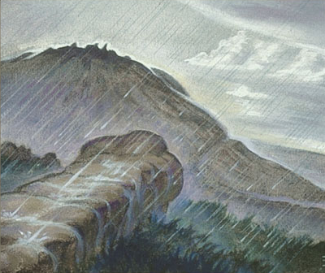

<!DOCTYPE html>
<html>
	<head>
		<link rel="stylesheet" href="leaflet/leaflet.css">

		<script src="leaflet/leaflet.js"></script>

		<style>
			html, body {
				height: 100%;
				margin: 0;
			}
			.leaflet-container {
				height: 1200px;
				width: 1600px;
				max-width: 100%;
				max-height: 100%;
			}
		</style>
	</head>

	<body>
		<div id='map'></div>

		<script>
			var map = L.map('map', {
				crs: L.CRS.Simple,
				minZoom: -3.65,
				maxZoom: -0.5,
			});

			var bounds = [[0, 0], [6639, 9890]];
			var image = L.imageOverlay('images/Middle_earth_Geography_Basemap.jpg', bounds).addTo(map);

			map.fitBounds(bounds);

			var Weathertop = L.latLng([4535, 3553]);
			L.marker(Weathertop).addTo(map);

			L.marker(Weathertop).addTo(map).bindPopup(
				'<b>Weathertop</b><br><br><br><i>On the top they found... a wide ring of ancient stone-work, now crumbling or covered with age-long grass. But in the centre a cairn of broken stones had been piled." -LotRI</i>'
			)
		</script>
	</body>
</html>
